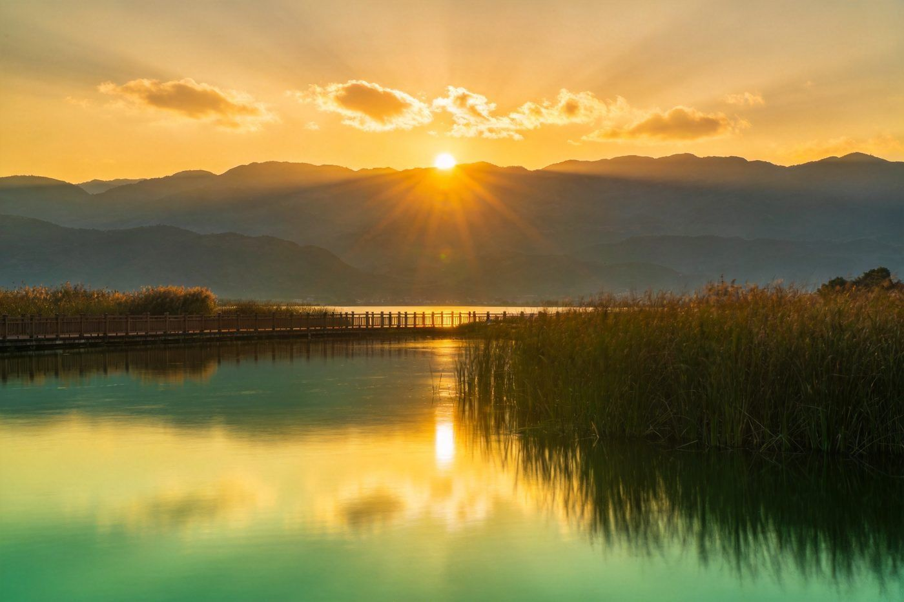
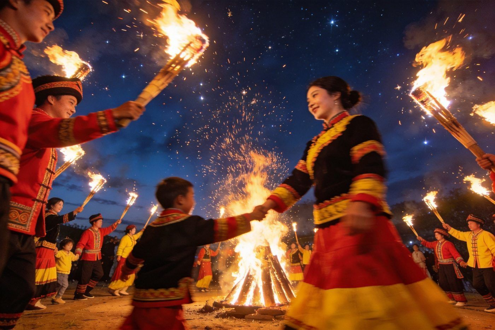
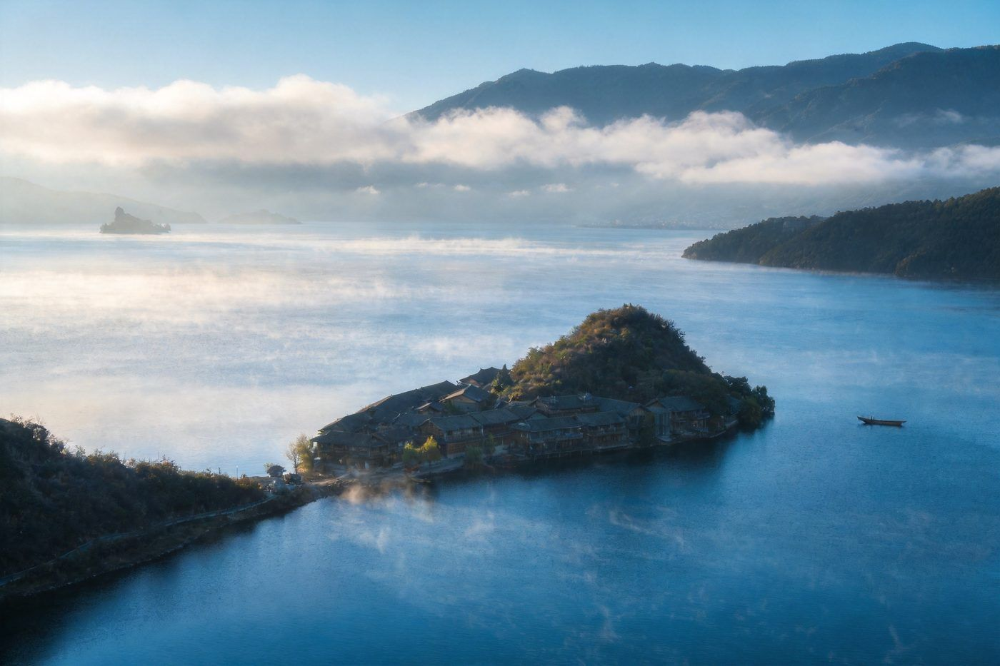
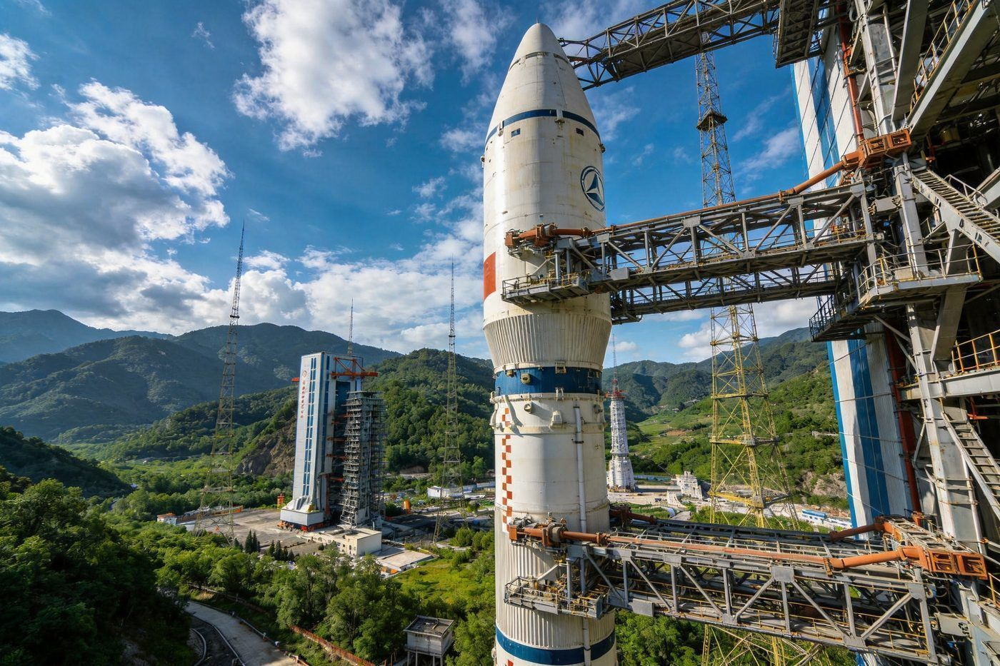
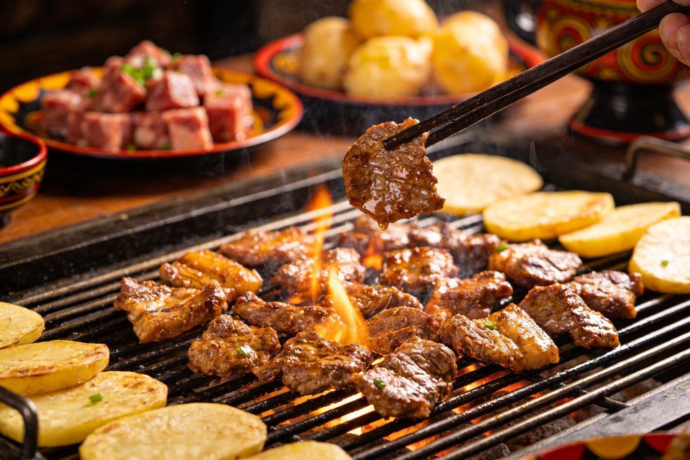

🔥 西昌 · 凉山 Liangshan · Fire Torch Festival
西昌火把节月城指南
凉山彝族自治州首府，一半是"月城"的静谧邛海，一半是彝族火把节的烈焰狂欢。核心看点：彝族火把节、邛海邛泸、泸沽湖女儿国、西昌卫星发射中心。想轻松周末走 2 天版，恰逢节庆赶火把节走 3 天版，深度入凉山走 5 天版。适合 1–4 人，含行程 / 火把节专章 / 住宿 / 美食 / 预算 / 出行方式对比。
📍 凉山彝族自治州西昌市（四川）👥 1–4 人⏱️ 2 / 3 / 5 天三方案⏰ 火把节约 7–8 月💰 人均预算已附
🕯️ 彝族火把节 · 凉山最亮的一夜
⏰ 农历六月二十四 · 公历约 7 月中下旬（为期 3 天）
🔥 点火仪式 & 万人火把游街夜幕降临，护火人点燃巨型火把，成千上万支火把汇成"火河"绕城游街，是名副实的"火的狂欢"。西昌主会场在火把广场与城区主干道。
🎭 彝族选美 &《朵洛荷》彝族传统选美（朵洛荷）盛装巡游，姑娘身着彝绣百褶裙、银饰叮当作响；还有赛马、斗牛、斗羊、摔跤等彝族传统竞技。
🥘 彝餐长街宴节日期间有彝族长街宴/坨坨肉流水席，配荞麦饼、酸菜汤、燕麦酒，穿插《火把节之夜》歌舞篝火晚会，边吃边看。
🛍️ 火把集市广场周边搭起彝族文化市集：漆器、银饰、彝绣、披毡、火把工艺品；可买一支小号火把参与点火，沉浸式融入。
📌 火把节玩法：火把节分 3 天，一般天天有火把与歌舞；主会场西昌之外，普格、会理、布拖、昭觉等也有分会场。西昌参与最方便，规模最盛大。若假期落在公历 7–8 月，务必专程赶一趟，这是全中国最独特、最具民族风情的节庆之一。
☕2 天轻松 · 打卡版
核心策略：D1 邛海环湖+泸山登顶看全景，D2 市区火把广场+彝族文化+卫星城，轻松不赶路。
👥 1–4 人适配：2 天节奏轻松，市区+邛海都在西昌城区半小时圈，打车/公交方便；预算按 人均 标注。
🗺️ 行程安排
DAY 1 · 邛海 + 泸山
🚄 高铁/飞机抵达西昌🌊 邛海湿地公园 环湖骑行（免费）
⛰️ 泸山登顶 俯瞰邛海全景🍢 晚饭 火盆烧烤
💡 邛海免费、湿地绿道环湖约30km，租单车或乘观光车；泸山可步行/缆车，山顶视野看邛海+城区日落一绝。火盆烧烤是西昌名片，必吃。
DAY 2 · 彝族文化 + 卫星城
🏯 火把广场 / 彝族奴隶社会博物馆🚀 西昌卫星发射中心（开放日预约）
🥔 市区吃凉山土豆/米粉 返程
⚠️ 卫星发射中心只在开放日接待、需提前实名预约；若约不上可改游火把广场与彝族博物馆。市区小吃街集中在建昌古城一带。
🏡 住宿建议
经济市区商务酒店
约 120–220 元/晚
交通吃饭方便，适合周末快闪，性价比高。
湖景邛海湖畔民宿
约 280–600 元/晚
推窗见邛海、晨起看湖面薄雾，度假感强。
特色彝族风情客栈
约 200–400 元/晚
彝绣软装+火把主题，建昌古城一带聚集。
🔥3 天火把节 · 专场版
专程赶凉山最红火的民族节庆：白天逛市集看选美赛马，夜晚万人火把点燃全城，再留一天给邛海放松。
👥 火把节人极多，住宿必须至少提前一个月预订；行程留足机动时间，主会场周边交通管制、建议步行或公交。日均消费约 300–600 元/人。
🗺️ 行程安排
DAY 1 · 抵达 + 火把节开幕预热
🚄 抵达西昌 入住（火把节期间务必提前订房）🛍️ 火把广场 逛彝族市集买火把/漆器
🏯 彝族奴隶社会博物馆 了解火把节由来
💡 到的第一天先摸清主会场路线，买好小号火把（约10-30元），为明晚点火做准备；城里已能感受到节日气氛。
DAY 2 · 火把节正日：选美+赛马+万人点火
🌞 白天 彝族选美《朵洛荷》+ 赛马斗牛斗羊🥘 彝餐长街宴 吃坨坨肉
🌆 黄昏 点火仪式 · 万人火把游街 · 篝火晚会
⚠️ 这是全行程高潮！天黑后全城火光冲天，跟着火把队伍游行参与最沉浸。人极拥挤：保管财物、穿防滑鞋、与他人保持距离，火堆旁勿穿宽松易燃衣物。手机留足电，录下漫天火把的震撼画面。
DAY 3 · 邛海放松 + 返程
🌊 早起邛海湿地看日出/环湖骑行⛰️ 或 泸山俯瞰全景
🍢 狮子山/建昌古城收尾 返程
💡 宿醉一日后走轻松安排，邛海免费、晨光绝美；返程前带一份火把节纪念品或凉山特产。
🌿5 天深度 · 入凉山版
西昌为支点深入凉山：火把节狂欢 + 邛海泸山 + 泸沽湖摩梭女儿国 + 卫星城，一次看遍"火与湖"的凉山大风景。
👥 泸沽湖跨云川两省，从西昌包车/班车约 5–6 小时、山路为主，建议往返各留一整天；日均消费约 400–800 元/人。
🗺️ 行程安排
DAY 1 · 抵达 + 邛海邛泸
🚄 抵达西昌🌊 邛海湿地环湖骑行（约半日）
⛰️ 泸山登顶看全景 日落
💡 首日适应海拔（西昌约1500m，泸沽湖约2700m），邛海骑行+泸山看日落是最佳开场。
DAY 2 · 火把节或彝族文化日
🏯 火把广场 + 彝族奴隶社会博物馆 + 建昌古城🛍️ 彝族服饰/漆器集市
🔥（若逢火把节）白天看选美赛马 · 夜晚万人火把
💡 不是火把节的月份，这一天深度体验彝族文化；是火把节则按"3天专场版 DAY2"的玩法走。
DAY 3 · 泸沽湖（摩梭女儿国）
🚗 西昌→泸沽湖（包车约5-6小时）🌊 里格半岛/大落水 环湖公路看日落
🔥 摩梭篝火晚会 跳锅庄
💡 泸沽湖有四川/云南两个环，沿线村落民宿可选里格（云南侧）或大落水；傍晚女儿国的摩梭篝火晚会很具风情。住宿提前订。
DAY 4 · 泸沽湖深入 + 返西昌
🚣 猪槽船游湖 · 草海走婚桥🏔️ 格姆女神山 / 里色岛
🚗 下午 泸沽湖→西昌 返程
⚠️ 猪槽船要看水性杨花（7-9月）；泸沽湖海拔约2700m、紫外线强注意防晒；返程山路预留时间、天黑前到西昌。
DAY 5 · 卫星城 + 收尾返程
🚀 西昌卫星发射中心参观（提前预约）🍢 西昌火盆烧烤 收官
🛍️ 带火把/凉山特产 返程
💡 卫星发射中心开放日看真塔架最震撼；返程前吃顿地道的火盆烧烤给旅程添把火。
🏞️必去特色景点
西昌的灵魂在"邛海之月"与"火把之焰"之间，五个招牌点值得为它们安排时间。

配图：原创生成 · 无版权风险
邛海 · 月城之湖
自然
四川第二大淡水湖，因"月出邛池水"得名月城。湖面四季澄澈，环湖湿地绿道全程免费，可骑行、徒步、划船。清晨湖上薄雾、傍晚倒映泸山，是西昌最静美的一张名片，配着湖边的火盆烧烤一起体验最地道。
🎫 湿地公园免费 🚴 环湖骑行约30km · 租车约30-60元 🛶 游船约80-120元
数据来源：西昌文旅 · 2026年实测攻略

配图：原创生成 · 无版权风险
火把节 · 彝族的东方狂欢夜
节庆
凉山彝族最盛大的传统节日（农历六月二十四），西昌是主会场。白天彝族选美、《朵洛荷》歌舞、赛马斗牛斗羊，夜晚点火仪式后万人举着火把绕城游街，火光映红整座城。被誉为"东方的狂欢节"，全中国最独特的节日体验。
⏰ 约每年7–8月 🎪 主会场：西昌火把广场 🔥 参与免费，火把约10-30元
数据来源：凉山文旅 · 实测推荐

配图：原创生成 · 无版权风险
泸沽湖 · 摩梭女儿国
自然
跨云川两省的"东方女儿国"，摩梭人保留母系大家庭与走婚文化。湖水湛蓝如镜，格姆女神山倒映其间，猪槽船穿行草海，走婚桥横跨芦苇。晨雾中如诗如画，是凉山行值得专程前往的秘境。
🎫 泸沽湖门票约100元 🚣 猪槽船约50-100元 🚗 西昌包车约5-6小时
数据来源：泸沽湖景区 · 云南/四川两侧

配图：原创生成 · 无版权风险
西昌卫星发射中心 · 航天之城
科技
中国三大卫星发射中心之一，多次执行北斗、嫦娥等重大发射。"嫦娥奔月地、中国航天城"就在西昌。可在开放日近距离参观发射塔架、长征火箭实物，感受航天科技与凉山热土的奇妙结合。
🎫 开放日参观需提前实名预约 🚀 有发射任务日开放名额更紧俏
数据来源：西昌卫星发射中心参观预约

配图：原创生成 · 无版权风险
火盆烧烤 · 火与肉的乡愁
美食
西昌"火盆烧烤"是当地灵魂美食：炭火烤架上滋滋冒油的坨坨肉、烤土豆、烤乳猪，配彝族蘸水。还有邛海醉虾、烤鱼、连渣捞、荞麦饼。一顿大快朵颐之后，才算真正到过西昌。
🍢 火盆烧烤人均约60-100元 🥔 凉山土豆/西昌米粉街边也地道
数据来源：西昌本地美食 · 实测推荐
🚗出行方式对比·怎么选
西昌是一座"火盆之城"，交通方式直接影响你的体验节奏；按目的地选。
| 方式 | 适合人群 | 参考耗时/费用 | 小结 |
|---|
| ✈️ 飞西昌青山机场 | 外省/远距离 | 1.5–3小时 / 视航线 | 落地即进市区，快；旺季/火把节机票紧张。 |
|---|
| 🚄 高铁（成都→西昌约3h） | 省内/中转 | 约3小时 / 二等座约130元 | 性价比高，成都中转最方便。 |
|---|
| 🚶+🚌 市区/邛海公交 | 市区1日游 | 邛海直达车约2–5元 | 邛海/火把广场都在城区圈，公交可达。 |
|---|
| 🚴 邛海环湖骑行 | 热爱户外 | 30km / 租车30-60元 | 环湖最美体验，晴天必做。 |
|---|
| 泸沽湖方向（往返各留一整天） |
| 🚐 包车/拼车 | 3–4人结伴 | 约5–6小时 / 往返 | 灵活、边走边停，人多划算。 |
|---|
| 🚌 长途班车 | 独行/省钱 | 约6–7小时 | 班次少、山路耗时，预算有限可选。 |
|---|
📍 火把节出行提醒：节庆期间主会场周边交通管制，傍晚起车辆限行，建议住在步行可达或公交直达的位置，夜晚靠双脚跟着火把队伍走。
🍢必吃美食
西昌人的一天从"火"开始——火盆烧烤配邛海鱼虾，凉山味道浓烈直接。
1火盆烧烤 / 坨坨肉炭火烤架现烤，坨坨肉肥瘦相间蘸彝香蘸水，西昌名片
约60-100元
2邛海醉虾 / 烤鱼湖鲜现捞，醉虾鲜甜、烤鱼配豆豉香麻辣
约40-80元
3彝族餐荞麦饼、酸菜汤、燕麦酒、连渣捞、腊肉荞粑，彝家待客满桌
人均约50-100元
4凉山土豆 & 西昌米粉高山土豆香糯，街坊米粉配红烧牛肉/酸菜
约8-20元
5蒸菜 & 邛海鱼头泸山脚下农家乐蒸菜，一鱼多吃是本地人的最爱
约40-70元
💰预算参考（人均）
按 2 / 3 / 5 天三档整理，淡季常规价位，火把节旺季部分项目上浮。
| 项目 | 2天轻松 | 3天火把节 | 5天深度 |
|---|
| 往返大交通 | 约300–600 | 约300–600 | 约300–600 |
|---|
| 住宿 | 约200–400 | 约500–1200（旺季暴涨） | 约900–2000 |
|---|
| 门票/体验 | 约50–200 | 约80–300 | 约300–800（含泸沽湖/猪槽船） |
|---|
| 餐饮 | 约150–300 | 约250–500 | 约450–900 |
|---|
| 当地交通 | 约80–150 | 约100–200 | 约400–900（泸沽湖包车） |
|---|
| 合计 | 约700–1200 | 约1200–2200 | 约2500–4800 |
|---|
🔥 火把节特别提示：7–8月火把节期间西昌住宿价格通常翻倍甚至更高，机票也紧张，务必提前一个月以上预订，并优先选步行可达主会场的位置。
🛡️避坑 & 实用贴士
- 🎫 火把节抢先订：主会场火把广场周边住宿与机票临期几乎订不到，行程定下立刻下单。
- 🚀 卫星中心预约：只在开放日接待、实名预约限量，出发前先确认当天是否开放，约不上改游博物馆。
- 🌊 泸沽湖海拔：约2700m，轻缓起身别剧烈运动，紫外线极强需 SPF50+ 防晒+墨镜。
- 🧯 火把安全：万人点火时很拥挤，穿防滑鞋、别穿宽松易燃衣物，火堆保持距离、看管好手机钱包。
- 🏳️ 尊重民族习俗：彝区请对火把、毕摩、图腾等礼仪保持尊重，拍照前先征求同意。
- 🌦️ 昼夜温差大：西昌海拔约1500m、日照强，"早穿棉袄午穿纱"，备件薄外套随身。
- 🚗 山路驾驶：往返泸沽湖多山路弯多，新手慎自驾；包车选正规平台并确认司机资质。